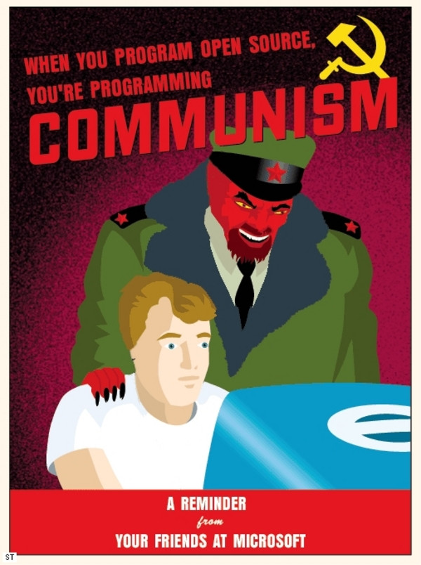
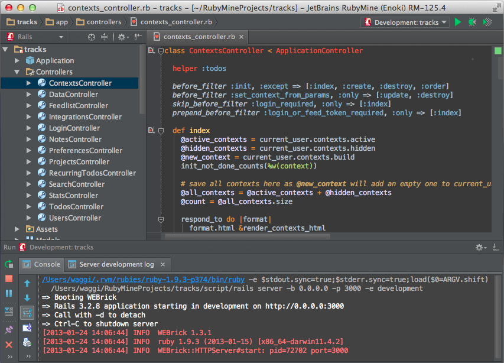

Ruby on Rails 4 vs. .NET MVC 5 Smackdown
November 2013, YYC Ruby/.NET Meetup
Ben Stevenson & Simon Timms/ @bennett_stevens @stimms
Fight!
- Hosting
- ORM
- Cost
- Performance
- Editor Templating vs. Formtastic
Hosting
Where your app lives
- Host it yourself
- Platform as a Service(PaaS)
- Infrastructure as a Service/Cloud hosting(IaaS)
Roll your own


Get someone else to do it...

The "Monster" of Managed Hosting
The Deal
- Platform as a Service(Paas)
- Scalable
- Addons
- Quick easy setup
How easy?

Sure...
The Actual Steps
- Sign up
- Download and install the Heroku Toolbelt
-
> Forge:Projects bennett$ heroku login > Enter your Heroku credentials. > Email: the.benstevenson@gmail.com > Password (typing will be hidden): H4Ckz0r5 > Authentication successful.> Forge:Projects bennett$ heroku create windnoes > Forge:Projects bennett$ git push heroku master
Or use... anything you can build...
-
Platform as a Service(PaaS)
-
Infrastructure as a Service(IaaS)
Other methods for doing things
In comparison
Active Record
Some things weren't possible (or at least easy in the past)
- Cool to love/hate with AR
- Too much magic
- OMG horrible syntax! Burn it!
It's OK
user = User.new(name:"Jane")
user.save!
User.where(name:"Jane").first
Simple, straight-forward, does it's job.
Convention over Configuration
User(model) = users(table name)
User::Role(model) = user_roles(table name)
schema.rb
rails g model user name:string
rails g model family name:string
ActiveRecord::Schema.define(version: 20131120045647) do
create_table "families", force: true do |t|
t.string "name"
end
create_table "users", force: true do |t|
t.string "name"
t.datetime "created_at"
t.datetime "updated_at"
end
end
Create Migration
rails g migration AddEmailAndFamilyToUsers email:string family:references
# db/migrate/20131120045647_add_email_and_family_to_users.rb
class AddEmailAndFamilyToUsers < ActiveRecord::Migration
def change
add_column :users, :email, :string
add_reference :users, :family, index: true
end
end
rake db:migrate db:test:prepare
Result
ActiveRecord::Schema.define(version: 20131120045647) do
create_table "families", force: true do |t|
t.string "name"
end
create_table "users", force: true do |t|
t.string "name"
t.datetime "created_at"
t.datetime "updated_at"
t.string "email"
t.integer "family_id"
end
add_index "users", ["family_id"], name: "index_users_on_family_id"
end
Arel
users = Arel::Table.new(:users)
query = users.where(users[:name].eq("Jane"))
query.to_sql
"SELECT FROM "users" WHERE "users"."name" = 'Jane'"
Alternatives
Performance
So there's this one little fact... MRI doesn't do multi-threading.
It doesn't matter!
- More than 1 Ruby.
- JRuby
- Rubinius
We've got options too!

All boils down to the same CLR
Where's the real cost in development?
- Developers cost way more than hardware.
- You can build applications quicker, more streamlined, no code behind assembly files.
- If you're chops are up to the task, without leaving the same terminal.
Makes it easy to do the right thing
- CDN Support built into framework
- Turbolinks
- Rails-API
- Open platform, open tools.
You can do anything you want in Rails
Cost
- Free
- Questions...?
Ok fine that was mildly loaded.
- As free as you're willing to make it.
- Swap and play.
- Editors... my god the options.
- Don't like VI? Use Emacs.
- Don't like Emacs? Use Sublime or Text Mate
- I need the IDE look! Use RubyMine
RubyMine

What about server costs?
Linux = Cheaper
With Windows
- Would you like a GUI with that?

JRuby
1 hour to port a medium sized application over while learning.
Huge performance increases without signifigant change to code-base.
Editor Templating vs. Formtastic
On Rails
- Stick with normal form helpers, they work.
<%= f.label :name %>
<%= f.text_field :name %>
Options!
- Use an alternative library
- Alterntative form builders can be customized for speicified CSS Frameworks
- Both support Bootstrap 2-3(beta)
A (Contrived) Example!
Default implementation in .NET
@Html.ValidationSummary(true)
@Html.LabelFor(m => m.UserName, new { @class = "col-md-2 control-label" })
@Html.TextBoxFor(m => m.UserName, new { @class = "form-control" })
@Html.ValidationMessageFor(m => m.UserName)
Formtastic (w/ Bootstrap 3 Support)
<%= f.semantic_errors %>
<%= f.inputs do %>
<%= f.input :username %>
<% end %>
Surely a nightmare to configure
gem 'formtastic-bootstrap'
# config/initializers/formtastic.rb
Formtastic::Helpers::FormHelper.builder = FormtasticBootstrap::FormBuilder
# app/assets/stylesheets/application.css
*= require formtastic-bootstrap
Formtastic: Once again options...
Or with Zurb Foundation
gem 'formtastic-zurb-foundation'
Or with simple_form
rails generate simple_form:install --bootstrap
Or with simple_form and Zurb
rails generate simple_form:install --foundation
Or add in TopCoat
gem 'topcoat-rails'
# app/stylesheets/application.css
*= require topcoat/desktop-dark
*= require topcoat/desktop-light
*= require topcoat/mobile-dark
*= require topcoat/mobile-light